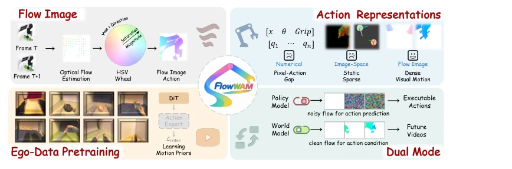
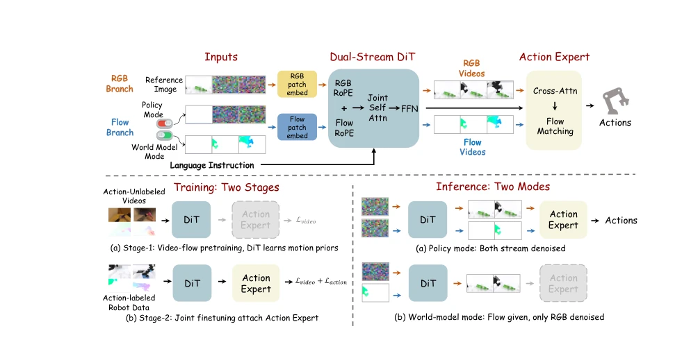
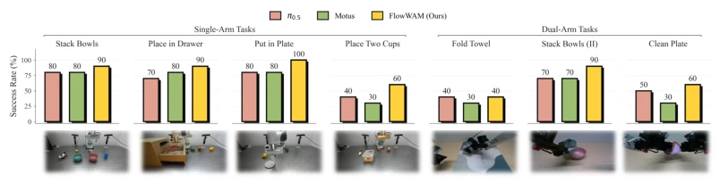
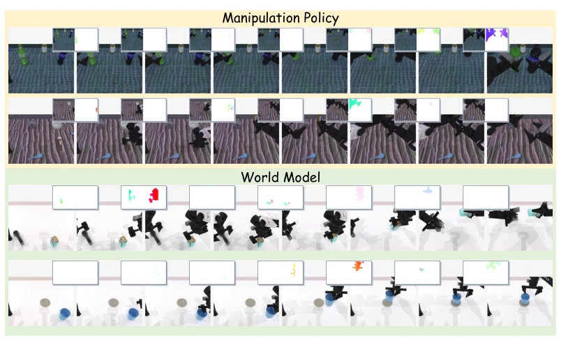
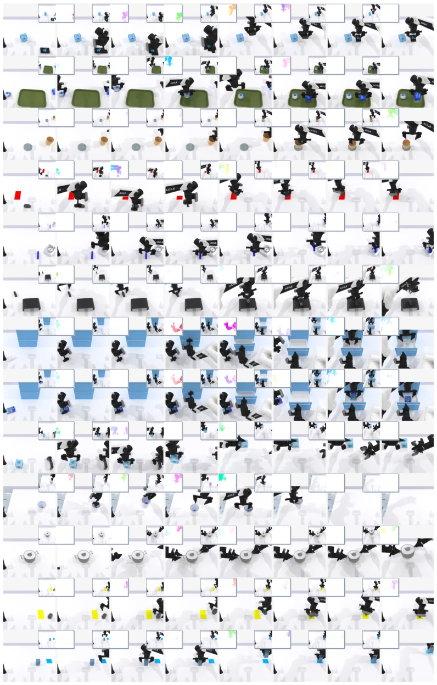
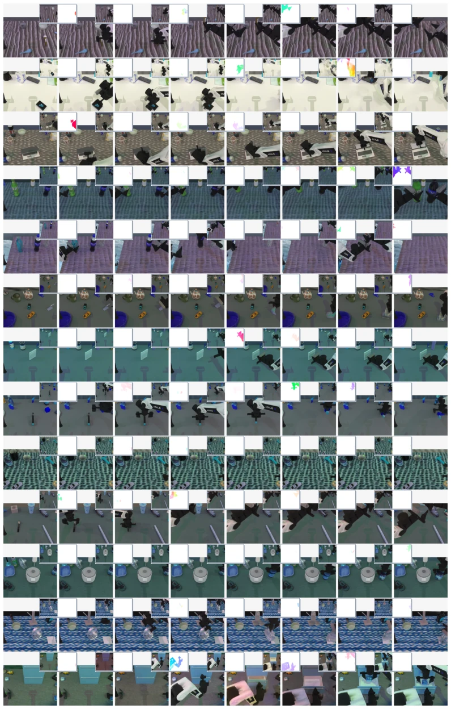
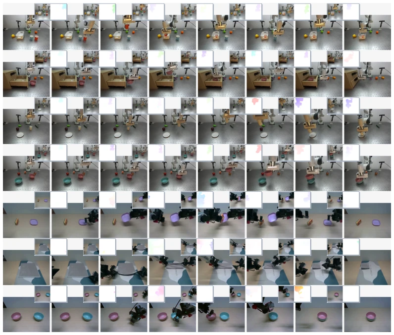

FlowWAM attempts to unify action representation using optical flow, which is quite ingenious, after all, video generation models inherently consume images, converting optical flow to HSV images and feeding them directly avoids the hassle of a Tokenizer. However, this method is not a silver bullet: although optical flow is dense, it loses semantics, for example, "picking up a cup" and "throwing a cup" might have similar optical flow, relying entirely on the Action Expert to guess. Additionally, although the dual-stream architecture shares a backbone, the training cost is certainly higher than single-stream. The most problematic aspect is, if optical flow estimation is inaccurate (e.g., motion blur), the entire strategy collapses, after all, it is "video-native" and sensitive to noise. However, achieving top performance on RoboTwin and WorldArena shows that this approach indeed addresses the pain point of WAM—the modality gap between actions and vision.
The core challenge of WAMs is action representation. Existing numerical actions [1, 7] are too abstract, not universal across different robot spaces; latent actions [4, 12] are decoupled but lose spatial details; image space actions [13, 14] like masks or ray maps are too static, only telling "where", not "how to move". Video generation models are good at capturing temporal dynamics, but feeding numerical tokens directly destroys their visual priors. FlowWAM observes that optical flow naturally conforms to video format, can encode pixel-level displacement, preserving temporal motion structure while being directly understandable by video generators. This solves the problem of "how actions seamlessly integrate into video priors", while supporting unlabeled video pretraining, addressing the pain point of scarce robot data.
FlowWAM is a dual-stream diffusion framework. The core is converting optical flow to RGB format via HSV encoding, consistent with video frame format. Architecturally, RGB and Flow streams share frozen VAE encoders and Transformer blocks, only Patch Embedding differs, interacting via Joint Attention. Training is divided into two stages: first pretrain dual-stream DiT on unlabeled videos to learn motion priors, then fine-tune Action Expert on robot data. Action Expert reads dual-stream features via cross-attention, predicting action blocks. Inference is divided into two modes: under Policy Mode, generate future Flow and decode into actions; under World Model Mode, generate future RGB given Flow conditions. This design unifies action prediction and world modeling into a video generation task, inheriting motion priors from large-scale video generators.
On RoboTwin 2.0, FlowWAM achieved success rates of 92.94% and 92.14% under Clean and Random settings respectively, outperforming VLA and WAM baselines. On WorldArena, EWMScore reached 63.71, with significant improvement in trajectory accuracy. Real-world Franka and ARX robots also verified transferability. Ablation studies show that removing optical flow reweighting or random noise conditions leads to significant decline. Flow error is strongly correlated with success rate (r=-0.81), proving that flow prediction quality directly determines control performance. Unlabeled pretraining yields greater gains under Random settings, indicating visual robustness is important.
其他图片Other Figures

Figure 1: FlowWAM uses optical flow as a unified action representation for world action models. By representing actions with dense flow videos, FlowWAM bridges executable robot actions and pixel-space video priors, enabling action-unlabeled video pretraining, policy inference, and action-conditioned world modeling within the same framework.

Figure 2: Overview of FlowWAM. FlowWAM encodes RGB frames and optical flow as two coupled video streams in a shared diffusion transformer. In policy mode, the model jointly generates future RGB and flow latents, and an action expert decodes the video generator’s intermediate features into executable robot actions. In world-model mode, desired flow trajectories are provided as conditioning, and the model generates future RGB frames that follow the specified motion.

Figure 3: Real-world success rates across single-arm and dual-arm manipulation tasks.

Figure 5: Qualitative visualization of FlowWAM in policy and world-model modes.

Figure 7: Qualitative policy rollouts on RoboTwin 2.0 Clean tasks. For each task, the small panels show FlowWAM’s predicted RGB frames and the corresponding optical-flow plan, and the large panels show the simulation rollout after the action expert decodes the predicted flow into actions.

Figure 8: Qualitative policy rollouts on RoboTwin 2.0 Random tasks. Compared with the Clean setting in Figure 7, the scenes here include randomized object pose, distractors, lighting, and background.

Figure 9: Real-world execution examples in policy mode across single-arm and dual-arm platforms. The first four rows correspond to single-arm Franka tasks, and the last three rows correspond to dual-arm ARX tasks. Within each task, FlowWAM’s predicted RGB frames and optical-flow plans are paired with the corresponding physical executions. The qualitative alignment between the predicted motion fields and the realized robot trajectories shows how the video-native flow representation connects model prediction with executable control.